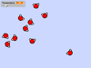

I believe that coding is an amazing tool for giving students the power to be technology creators instead of only consumers. If students are able to gain a basic understanding of several coding concepts they can quickly start to brings their ideas and imaginations to life. I envision students combining coding skills with their creativity to demonstrate their understanding of the curricular content being taught in their various subjects. This is a ongoing list of various programs that I have created using Scratch that incorporate various curricular content.
-

Molecular Motion
Science
Students apply their knowledge of the 'Kinetic Molecular Theory' to show the effect of temperature on the average kinetic energy of gaseous molecules.
-

Rotating Squares
Mathematics
Transformations of 2D shapes can be explored, specifically rotations. An understanding of angles will also be required to ensure that a full 360 degree rotation is made. The program could also be adapted to look at translations and reflections.
-

Pong
Mathematics
Students will need to have a strong understanding of various mathematical concepts to create their version of pong. They will need to be confident with cartesian geometry, specifically the coordinate system. Vectors will also be applied to control the balls speed and direction.